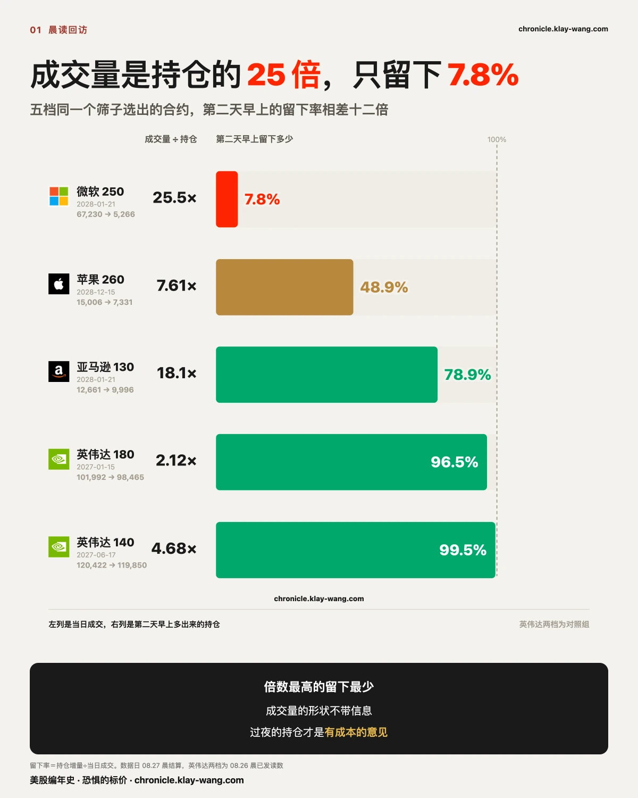
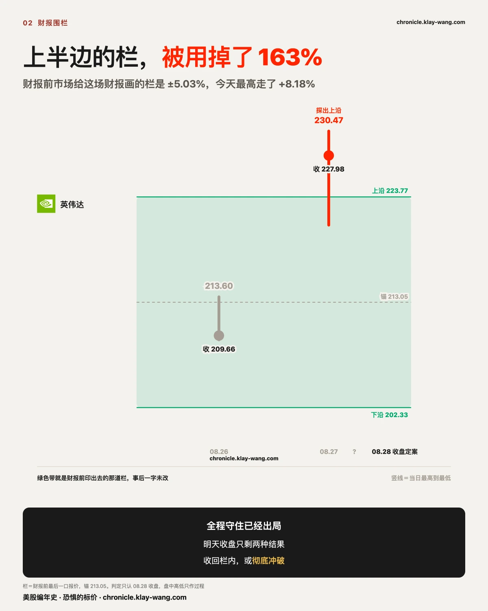
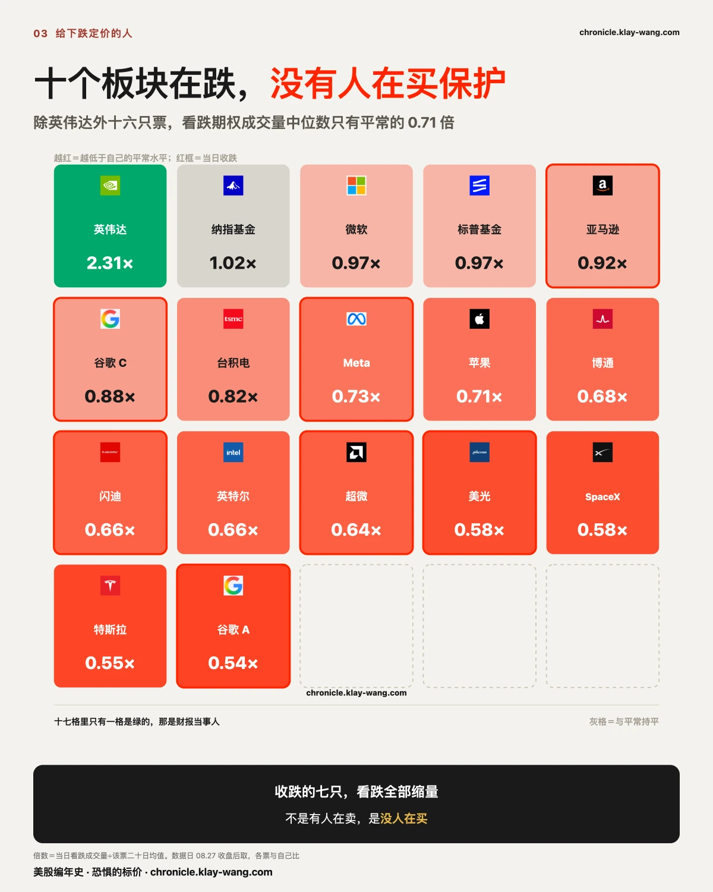
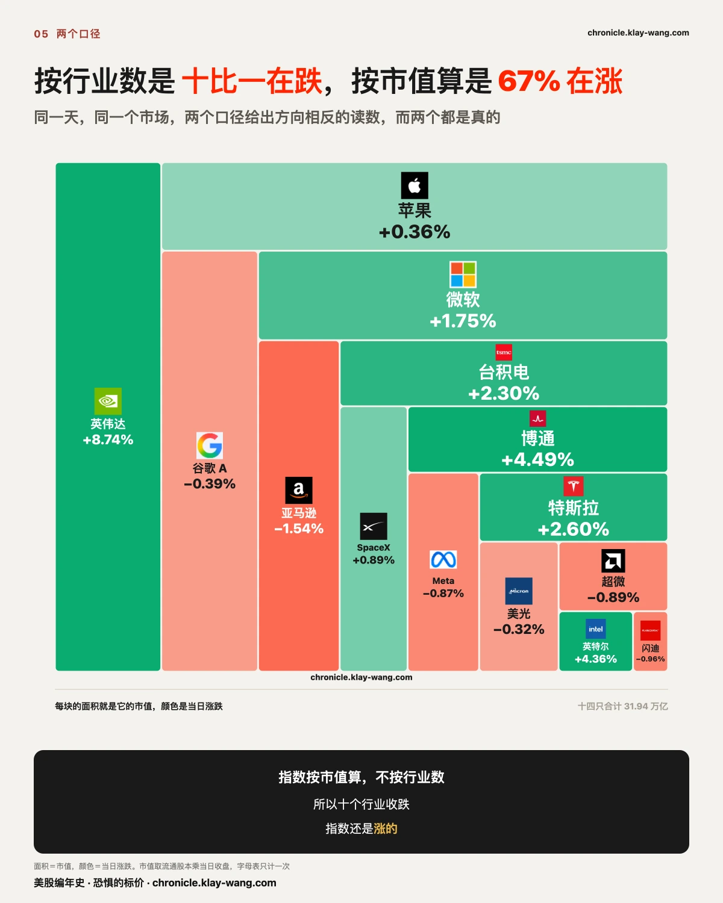

Three Events, One Day, Zero Movement · 8.24-8.28
一 · 一条改变明年的消息，没有动一年后的价钱
英伟达今天涨了 8.74%，收 227.98，盘中最高到过 230.47。财报里罕见地提前一年给了指引，下财年增长 70%，比市场原本预期的约 45% 高出 25 个百分点。
按理说，这是一条改变一年的消息。
但把今天的价钱摊开看，被改的全是近处的东西。它明天到期那一档的期权权利金，一天之内从 2.17 亿涨到 7.72 亿，多了两倍半还不止。它一个月的保险从 41.01 塌到 33.73，一天掉了 7.28 个波动点。
而它一年期的保险，从 40.39 走到 39.73，动了 0.66。
一条把明年增速预期抬高 25 个百分点的消息，把明天的价格、明天的权利金、一个月的保险全部重新定了一遍，唯独没有动一年后的价钱。 这不是市场没看见，是市场看见了并且给出了回答：这件事值一天，不值一年。
昨天印的判据是：跳升超过两个点算事件前观望，仍在 40 上下算长端从没把这次财报当成改变一年格局的事。今天收 39.73，后一半成立。同一天期限结构翻了个面，昨天近月比一年期还贵，今天近月大幅低于长端。
可以推翻它：接下来三个交易日里，一年期只要累计动过 2 个点，这个说法就收回，今天记成单日形状。
二 · 这份财报里最该被读的那句话，不是那个 70%
全网今天读的是同一组数：单季营收 962 亿同比翻倍多，数据中心 890 亿占了九成还多，下一季指引 1080 亿，以及那个罕见的提前一年、下财年增长 70%。
同一份材料里另外两句被那个 70% 盖住了。
第一句是公司自己说的：当前展望受到供应限制。 也就是这个 70% 不是需求的上限，是供给的上限。一家大行的原话是，在供应不受约束的情况下需求增速会明显更高。一个被供给卡住的增长指引，和一个被需求撑起来的增长指引，是两种完全不同的东西：前者的风险不在客户会不会买，在能不能造出来。
第二句藏在毛利率里。 下一季的非 GAAP 毛利率指引是 74%，比这一季的 75% 低一个百分点。营收翻倍多、指引首破千亿、毛利率往下走一个点，这三件事同时为真。
两句放一起，今天这个 8.74% 就有了形状：买的是产能兑现的确定性，不是定价权的扩张。产能能被追上，定价权不容易。
如果涨的是定价权，那是关于长期的判断，一年期该重新定价；如果涨的是未来几个季度能交多少货，它天然只影响近处。把 7.28 个波动点砍在一个月上、只让一年期动 0.66，等于用价格说了同一句话：这是一份关于交付的财报，不是关于护城河的财报。
这句可以推翻：如果接下来两个季度毛利率指引重新往上走，而一年期同步抬升超过两个点，那么今天这个读法就是错的，产能确实换来了定价权，回来认。

三 · 成交量的形状不带信息，过夜的持仓才带
昨天正文留了一道题：三笔远端深虚看跌，微软 2028 年 1 月 250 看跌成交 67230 张而持仓只有 2642 张，亚马逊 2028 年 1 月 130 看跌 12661 张对 700 张，苹果 2028 年 12 月 260 看跌 15006 张对 1973 张。判据印在昨天的稿子里：今早的持仓向成交量靠近，是新建仓住下；回到原位，是当日来回。
今早的结算持仓出来了，三个答案各不相同。
微软那六万七千张，只留下 5266 张，留下率 7.8%，绝大部分当日来回。亚马逊留下 9996 张，留下率 79%，近八成住下。苹果留下 7331 张，留下率 49%，一半一半。加上前天英伟达那两档 2027 年深虚看跌（留下率 99.5% 和 96.5%），两天、四只票、五档合约，同一个筛子选出来的单子，留下率从 7.8% 排到 99.5%。
这一排数字推翻了一个很好用的偷懒法：成交量是持仓的多少倍，这个形状本身不带信息。倍数最高的微软（25 倍）留下最少，倍数最低的苹果（7.6 倍）留下近半，两者是反着的。有成本的意见只有第二天早上的持仓能证明，前一天晚上的成交量证明不了。
说清楚边界：当日来回也是真金白银的交易，它只是不过夜。这里量的是期限，不是真假。

四 · 这道栏不可能再是全程守住，明天只剩两种结果
财报之前，覆盖财报夜那个到期日的期权会被重新定价，把那批合约的价钱反推回去，就是市场认为这只票财报之后大概率会走多远。英伟达这道栏八天前就印过一次：8 月 19 日那期，财报前最后一档的预期波动是 2.65%，覆盖财报的第一档是 5.42%，中间只隔四个日历日，价格翻了一倍。当时写的判断是，买的人要的不是一段波动，是一个具体日期。
财报当天早上，这道栏定格在最后一口报价：预期波动 10.72 美元，5.03%，区间 202.33 到 223.77。七天里带宽几乎没动，市场对这场财报会有多大动静的估计，从头到尾没变过。
财报当晚那天全程在栏内，最高 213.60，收 209.66，上半栏只用掉 5%。今天跳空高开，最高 230.47，最低 220.90，收 227.98。相对栏中点 213.05，最高点走了 8.18%，而上半边的栏只有 5.03% 宽。上半边被用掉 163%，收盘也没回来，收在栏外 4.21 美元。
所以有一件事今天已经定了：这道栏不可能再是全程守住。剩下的只有两种结果。
判定规则事前定过，写在七月底 Meta 那一节里：中途读数是真实的测量，但不是结论，结论只认结算日收盘，因为那是唯一一个不需要挑选的点。挑时点，就是在挑结论。
所以这道栏的开奖只看一个数：明天（周五）的收盘价。收回 202.33 到 223.77 之间，它是探出去又收回来，跟 Meta 那道一样；收在外面，就是彻底冲破。前六家的栏破了五道，唯一守住的 Meta 差 0.72 个百分点。明晚回来结这一笔。

五 · AI 不会杀死 SaaS，但会改掉它收钱的方式
财报季的另一头，赛富时昨晚交了一份超预期的答卷，盘后一度涨了一成四。表里没有它，所以不配数字，只说一个看法。
关于 AI 会不会杀死 SaaS，这个问法本身就错了。SaaS 卖的从来不是那个界面，是别人不愿意自己维护的流程、权限和数据，这三样东西模型再强也得先拿到手才能动。所以真正的风险不是某一家被整个替代，是定价权从按人头收费滑向按结果收费：席位不再增长的那天，收入可能还在涨，但涨的方式变了，估值给的倍数也就该跟着变。赛富时这周的答案是把模型请进自己的数据里，而不是等模型从外面把数据拿走，这是目前看得见的最合理的一种下注。
不过看法是不要钱的。上一节那家公司的围栏每天都在被人用真金白银重新标价，那才是有成本的意见。
六 · 十个板块在跌，而给下跌付钱的人比平常少了三成
先把好的说完整。这份财报是真的好：单季营收 962 亿，增长 106%，数据中心那块 890 亿，占了九成还多；罕见地提前一年给指引，下财年增长 70%。今天 AI 这条线从硬件涨到软件，赛富时财报后一度涨过两成，愿意冒险的钱一分没走，微策略涨了 11.54%。看多的人今天每一条都拿到了想要的东西。
正因为这样，居安思危，反面也得找一遍：一批英伟达的深度看跌，形状很像有人在给崩塌下注，一取价合计只值九千五百美元；另一批大盘一年后的看跌，权利金看着有 1.68 亿，但占那只基金当天期权成交量的 0.21%，而且里面 1.39 亿是内在价值，真花出去的只有 2,880 万。
还有一层比金额更要命：那两批都分不出是买还是卖。买入看跌是押下跌，卖出看跌是收权利金、赌它不跌，那是看多的做法。同一组数字两个相反的解释，一个都排除不掉。
而如果不去找某一笔大单，改问一个不需要分辨买卖的问题呢。今天给下跌定价的人，比平常多了还是少了。
这个问题只需要成交量，不需要知道谁在哪一边。答案是：十七只票里，只有英伟达一只放量。** 它今天的看涨期权成交量是二十日平均的 2.84 倍，看跌是 2.31 倍。财报当天，两边都被重新交易一遍，正常。
其余十六只，看跌期权成交量的中位数是平常的 0.71 倍。
而今天收跌的有七只，它们的看跌成交量是：
| 票 | 今日涨跌 | 看跌成交量 vs 平常 |
|---|---|---|
| 亚马逊 | −1.54% | 0.92 |
| 苹果的搜索伙伴（C 类） | −0.41% | 0.88 |
| Meta | −0.87% | 0.73 |
| 闪迪 | −0.96% | 0.66 |
| 超微半导体 | −0.89% | 0.64 |
| 美光 | −0.32% | 0.58 |
| 谷歌 A | −0.39% | 0.54 |
七只全部低于常态，一只例外都没有。跌得最狠的那只只有平常的 0.92，跌幅最小的谷歌反而只有 0.54。 把看跌除以看涨再和各自二十日常态比，十七只里十三只低于常态。
所以今天真正反常的不是有人在买保护，是没有人在买。 十一个行业基金里十个收跌，而这十七只票上给下跌付钱的意愿比平常低了三成左右。
下跌有两种来源：有人在卖，或者没人在买。前者会在期权上留痕，因为卖压通常伴随对冲需求；后者不会。今天是十个板块收跌加上看跌全面萎缩，更像后者，是买盘缺席的漂移，不是抛压。这个形状八月十九日立过一次案，当时四只票，判据是跌得最狠的几只全部缩量；八月二十六日开奖，判对。今天是第二次，样本从四只扩到七只。
今天唯一值得提醒的就是这件事。 不是有人预警了什么，恰恰相反：十个板块在跌的这一天，没有人在预警。真出事的时候，最脆弱的状态往往不是所有人都在买保险，而是所有人都觉得不需要买。
另一个市场对同一家公司的定价。 据公开报道，英伟达五年期的信用违约保险目前报价在 84 到 89 个基点，接近历史高位，比同评级的谷歌和亚马逊宽约 25 个基点；一家大行八月二十四日启动对它的信用覆盖，给中性，建议在现金债券和信用违约互换两个市场都先观望，理由是尾部风险不透明且规模可观。两边的答案不在同一个方向上：信用那侧为它的长期风险要的价接近历史高位，股票期权这侧的一年期保险今天动了 0.66。
如果长期风险真的在抬升，先在信用市场标出来是常态，因为那里的钱借得更久。股票期权这一层，今天还没有跟上。
可推翻条件：接下来三个交易日，这十七只票的看跌成交量中位数回到常态 0.9 倍以上，今天即记为单日形状，本条收回。

七 · 不是风险偏好升或降，是钱在场内搬家
指数收了 0.66%，纳指基金收了 1.37%。把它拆开，今天的钱分成清清楚楚的三堆。
第一堆在涨：AI 这条线，从硬件到软件。英伟达 8.74% 只是最显眼的；软件那一层涨得更凶，赛富时一度涨过两成，安全、设计、数据一起被拉起来。十一个行业基金只有科技是绿的，涨 3.16%。
第二堆在跌：其余十个一只不剩，全部收跌，从 0.22% 到 1.38%。跌得最狠的是必需消费，然后是医疗、可选消费、通信。防御的和周期的同方向。这不是从进攻换到防守的轮动，轮动总有一头是买进的，今天防守那头也在卖。
第三堆最说明问题：高贝塔在买。微策略涨 11.54%，量子计算那只涨 6.07%，比特币矿商 5.79%，Coinbase 4.92%，Palantir 4.75%。愿意冒险的钱没有离场，它们只是绕开了那十个行业，全挤进 AI 和加密这两条线。
把涨幅拆成开盘前后两段：英伟达那 8.74% 里 6.30 个百分点是开盘前定死的，白天只走 2.30。微策略正好相反，11.54% 里跳空只占 2.91，剩下 8.39 是白天买出来的。一个隔夜就标好了价，另一个是开盘后有人在追。
所以今天的形状不是风险偏好升或降，是钱在场内搬家：AI 线和高贝塔两头在收，其余的地方在出。指数的那点涨幅，是这三堆互相抵消后剩下的读数。而保险那一侧，波动率指数从 15.21 落到 14.51，跌了 4.6%。财报落了地，事件溢价确实放掉了一截。但放掉的是哪一截，才是今天真正的答案：英伟达一个月的保险掉了 7.28 个波动点，一年期只动了 0.66。便宜下来的是近处，远处的价钱一动没动。

八 · 明天那一档的钱多了一倍半，而长端仍然没动
明天那一档的钱。 先说口径：昨天是通胀数据日，这张表的门槛开到最宽，十五只票的近月单子都数得进来；今天是普通日子，只数得到财报窗里的那两只。所以这一档只和昨天的同口径部分比：从 2.17 亿到 7.72 亿，多了一倍半还不止。 昨天印的判据是，继续增厚说明买的是财报之后那一段。这一条成立，而且不是小幅增厚。
博通那道倒挂又宽了。 一个月的保险减去一年期，昨天 3.17，今天 3.70。判据是收回 2.0 以下算消息周的临时定价，继续走宽说明撤掉一年之后那笔风险溢价这件事还没做完。走宽了。值得注意的是走宽的来源：一个月那头涨了 0.61，一年期只动了 0.08。又是长端不动。 它今天价格涨了 4.49%。
Meta 那条判不了。 昨天印的判据有两个口子：回落到 41.83 下方算当日噪音，继续走高算那笔账单在被慢慢标价。今天收 41.98，两个口子一个都没进。和解落地的第二天，一年期只回吐了 0.54，昨天涨的那 0.69 没被收回，也没有接着走。挑一条硬套等于替市场做决定，所以这条不给答案，判据不改，明天接着挂。
还有一条今天没结：新任美联储主席明天讲话，判据落在明天收盘。
九 · 两笔账压着同一个收盘，明晚一笔一笔结
明天的收盘价要同时结两笔账，两笔的判据都已经印在之前的稿子里。
第一笔是财报的账：围栏 202.33 到 223.77，上一节说过了。
第二笔是利率的账：杰克逊霍尔年会上新任美联储主席的首秀。周一印过一个形状：押注周五到期的期权权利金从 4.555 亿增厚到 8.853 亿，而一年期保险一动没动，当时的判断是：市场买的不是方向，是他开口那一刻的反应函数。今天这一档的读数记不了。这张表今天只数得到财报窗里的两只票，那 7.72 亿是英伟达和博通的钱，是财报的钱，不是押讲话的钱。周一那个 8.853 亿是十五只票一起数出来的，两个数不是一把尺子量的，所以这个中间点今天空着。判据不改，明天收盘照样开奖。
他开口之前最后一份劳动力数据今早到了：初请 20.3 万，比预期还少，裁员仍在低位，失业率停在历史低位附近。劳动力市场给不出要宽松的理由，而利率期货本来就押着年底前至少加息一次。数据和押注同向，剩下的只是他怎么说。
有评论把这周概括成一句话：英伟达决定盈利还能涨多少，联储主席决定市场愿意为这些盈利付多少钱。借它这个说法：两笔账压着同一个收盘，明晚回来对账，一笔一笔结。
（背景，均为公开报道：30 年期美债收益率上周触及 2007 年以来最高，财政部把长债回购规模翻了一倍，三家大型科技公司今年发债已是去年全年的两倍余。发行人和买保险的人，都在给更长的时间重新标价。）
今天值得带走的三句话
一，一条把明年增速预期抬高 25 个百分点的消息，把明天的价格、明天的权利金、一个月的保险全部重新定了一遍，唯独没有动一年后的价钱。 长端不是没看见，是看见了，然后说这件事值一天。
二，十一个行业基金只有一只是绿的，而愿意冒险的钱一分没走。 微策略涨 11.54%，量子那只涨 6.07%。钱不是在离场，是在场内往两条线上挤，其余十个地方在出。
三，成交量是持仓的二十五倍那笔，第二天早上只留下 7.8%；倍数最低的那笔反而留下近一半。 成交量的形状不带信息，有成本的意见只有第二天早上的持仓能证明。
本站不提供投资建议，不预测方向，不做择时。